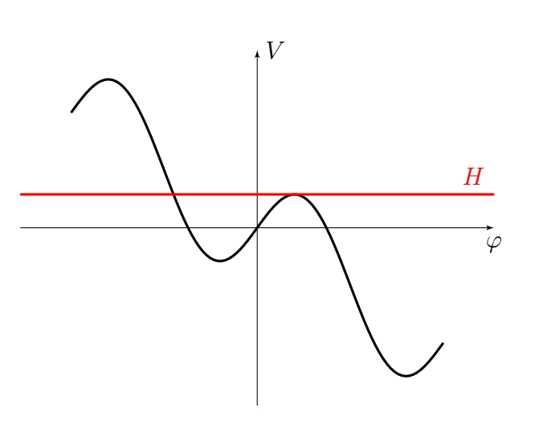
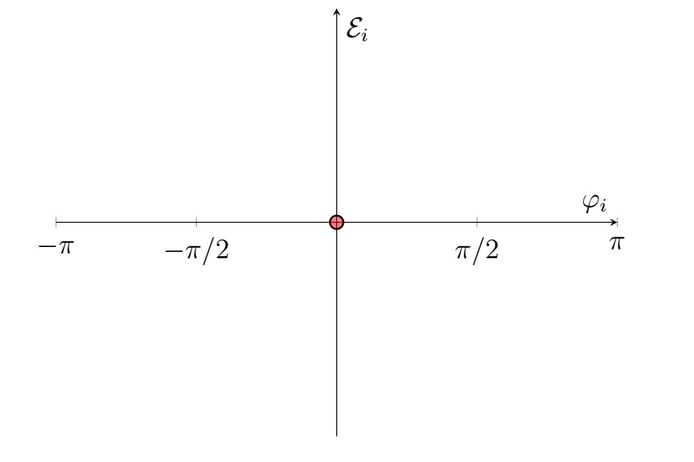
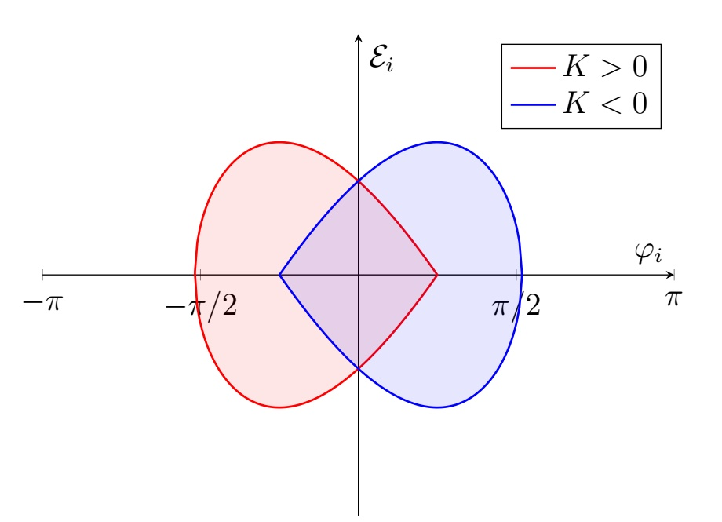

Y26 (2026) — English translation
Let's write down Newton's second law: $$e v B = p \frac{2\pi}{T}.$$$$B = \frac{2\pi}{eT}\cdot\frac{p}{v} = \frac{2\pi}{eT}\cdot\gamma m = \frac{2\pi}{eT}\cdot\frac{E}{c^2}$$
Let's express the energy from the result of the previous point and differentiate taking into account the fact that $T = \text{const}$. $$\frac{dE}{dt} = \frac{eTc^2}{2\pi}\cdot\frac{dB}{dt} = \frac{eU}{T}\cos\varphi$$$$\cos\varphi = \frac{T^2c^2}{2\pi U}\cdot\frac{dB}{dt}$$The cosine does not exceed 1, which provides a condition for the permissible parameters of the synchrotron.
Newton's second law is similar to the previous points: $$e v B = p \frac{2\pi}{T} = \frac{p \omega_U}{n}.$$Express $p$ and $E$: $$p = eB\frac{vT}{2\pi} = eBR.$$$$E=\sqrt{(m_p c^2)^2 + (pc)^2}=\sqrt{(m_p c^2)^2 + (ceBR)^2}$$Relation $E$ and $B$ one can obtain and similarly прошлому part: $$eB = \frac{p \omega_U}{vn} = \frac{E\omega_U}{c^2n}.$$$$\omega_U(t) = \frac{nec^2B}{E}$$All that remains is to substitute the energy value.
Similar to the previous point, the expression for momentum in a circular orbit with radius $R$: $$p(R) = eB(R)R=\text{const}\cdot R^{1-\xi}.$$Then relation on relative change: $$\frac{dp}{p} = (1-\xi)\frac{dR}{R} = (1-\xi)\frac{dL}{L}.$$
Let's use the expression for the cyclic frequency: $$\omega = \frac{2\pi v}{L}.$$$$\frac{d\omega}{\omega} = \frac{dv}{v} - \frac{dL}{L} = \frac{dv}{v} - \alpha\frac{dp}{p}$$$$K = \frac{E}{v}\frac{dv}{dE} - \alpha\frac{E}{p}\frac{dp}{dE}$$Find derivative and substitute. $$\frac{vdE}{Edv} = \frac{vd\frac{1}{\sqrt{1-v^2/c^2}}}{dv/\sqrt{1-v^2/c^2}} = -\frac{v}{\sqrt{1-v^2/c^2}}\cdot \frac{d\sqrt{1-v^2/c^2}}{dv} = \frac{v^2}{c^2-v^2} = \beta^2\gamma^2 = \left(1-\frac{1}{\gamma^2}\right)\gamma^2 = \gamma^2-1$$$$\frac{p}{E}\frac{dE}{dp} = \frac{p}{\sqrt{(mc)^2+p^2}}\frac{d\sqrt{(mc)^2+p^2}}{dp} = \frac{p^2}{(mc)^2+p^2} = 1-\frac{(mc^2)^2}{E^2}=1-\frac{1}{\gamma^2}= \frac{\gamma^2-1}{\gamma^2}$$
For a critical situation we have: $$\gamma = \frac{1}{\sqrt{\alpha}}.$$$\gamma > 1$, therefore for the existence of critical energy it is necessary $\alpha < 1$. For weak focusing this condition is not met.
Let us consider the change in the phase of a particle in contrast to the equilibrium one during one revolution: $$\Delta \varphi =\omega_U\left(\frac{2\pi}{\omega} - \frac{2\pi}{\omega_0}\right).$$Поделим on time this change, that is period обращения particle equal $2\pi/\omega$. $$\dot\varphi = \omega_U\left(1-\frac{\omega}{\omega_0}\right) = n(\omega_0 - \omega)$$Use определением $K$ and obtain: $$\omega - \omega_0 = K\frac{\omega_0}{E_0}\mathcal E.$$
Let us write down the derivatives $E$ and $E_0$. $$\dot E = \frac{\omega}{2\pi} eU \cos\varphi \approx \frac{\omega_0}{2\pi} eU \cos\varphi$$$$\dot E_0 = \frac{\omega_0}{2\pi} eU \cos\varphi_0$$
Let us differentiate $\dot \varphi$ taking into account the indicated approximations. $$\ddot\varphi=-\frac{nK\omega_0}{E_0}\dot{\mathcal E}$$
For stability, we expand to first order: $$\ddot\varphi=\frac{nK\omega^2_0eU}{2\pi E_0}\sin\varphi_0 (\varphi - \varphi_0).$$
Let's use the result of the previous paragraph. $$\ddot\varphi = \frac{d\dot\varphi}{dt} = \frac{d\dot\varphi}{d\varphi}\frac{d\varphi}{dt} =\frac{d\dot\varphi^2}{2d\varphi}$$$$d\dot\varphi^2 = -\frac{nK\omega^2_0eU}{\pi E_0}\left(\cos\varphi - \cos\varphi_0\right)d\varphi$$$$\dot\varphi^2 + \frac{nK\omega^2_0eU}{\pi E_0}\left(\sin\varphi - \varphi\cos\varphi_0\right) = \text{const}$$Remain substitute initial value. $$\dot\varphi_i = -\frac{nK\omega_0}{E_0}\mathcal E_i$$
Let's use the result of the previous point: $$\dot\varphi^2 + \frac{nK\omega^2_0eU}{\pi E_0}\left(\sin\varphi - \varphi\cos\varphi_0\right) = \text{const} = \left(\frac{nK\omega_0}{E_0}\mathcal E_i\right)^2+\frac{nK\omega^2_0eU}{\pi E_0}\left(\sin\varphi_i - \varphi_i\cos\varphi_0\right).$$Note, that вовлечение in acceleration равносильно ограниченности motion $\varphi$. $$\dot\varphi^2 + V(\varphi) = \text{const} = H$$Obtain problem исследования motion in some "potential" $V$ with "energy" $H$. Consider case $K>0$. Construct qualitative form $V$ for this case.
Red indicates the maximum level of “energy” at which the movement is finite (occurs in a limited area). With greater “energy” $\varphi$ can grow unlimitedly (movement to the right on the graph). Let's find this value $H$. It is determined by the value of the maximum $V$. $$\frac{dV}{d\varphi} = \frac{nK\omega^2_0eU}{\pi E_0}\left(\cos\varphi-\cos\varphi_0\right)$$Maximum correspond $\varphi = |\varphi_0|$. $$H = \frac{nK\omega^2_0eU}{\pi E_0}\left(\sin|\varphi _0|- |\varphi_0|\cos\varphi_0\right)$$Then condition on $\varphi_i$ and $\mathcal E_i$ have form: $$\left(\frac{nK\omega_0}{E_0}\mathcal E_i\right)^2+\frac{nK\omega^2_0eU}{\pi E_0}\left(\sin\varphi_i - \varphi_i\cos\varphi_0\right) \leqslant \frac{nK\omega^2_0eU}{\pi E_0}\left(\sin|\varphi _0|- |\varphi_0|\cos\varphi_0\right).$$Be worth note, that at the same time exist additional condition on $\varphi_i$. Изначально particle must be located in "potential яме", that correspond $\varphi_i \leqslant |\varphi_0|$. Note, that for $K<0$ ситуация аналогичная, but now potential have maximum for $\varphi = -|\varphi_0|$. Then maximum "energy": $$H = \frac{nK\omega^2_0eU}{\pi E_0}\left(-\sin|\varphi _0|+ |\varphi_0|\cos\varphi_0\right).$$and аналогичное ограничение on phase $\varphi_i \geqslant -|\varphi_0|$. Note, that one can обобщить on arbitrary sign $K$: $$H = \frac{n|K|\omega^2_0eU}{\pi E_0}\left(\sin|\varphi _0|- |\varphi_0|\cos\varphi_0\right).$$$$\frac{K}{|K|} \varphi_i \leqslant|\varphi_0|$$Final expression for the desired area:
Region border: $$\left(\frac{nK\omega_0}{E_0}\mathcal E_i\right)^2+\frac{nK\omega^2_0eU}{\pi E_0}\left(\sin\varphi_i - \varphi_i\cos\varphi_0\right) = \frac{n|K|\omega^2_0eU}{\pi E_0}\left(\sin|\varphi _0|- |\varphi_0|\cos\varphi_0\right);$$$$\frac{K}{|K|} \varphi_i \leqslant|\varphi_0|.$$
Case $\varphi_0 = 0$
$$\left(\frac{nK\omega_0}{E_0}\mathcal E_i\right)^2+\frac{nK\omega^2_0eU}{\pi E_0}\left(\sin\varphi_i - \varphi_i\right) = 0;$$$$K \varphi_i \leqslant 0.$$Несложно note, that for $\varphi_i \neq 0$: $$K\left(\sin\varphi_i - \varphi_i\right) = -K\varphi_i\left(1-\frac{\sin\varphi_i}{\varphi_i}\right).$$At the same time $1-\frac{\sin\varphi_i}{\varphi_i}>0$, therefore: $$K\left(\sin\varphi_i - \varphi_i\right) = -K\varphi_i\left(1-\frac{\sin\varphi_i}{\varphi_i}\right) > 0.$$Substitute in first неравенство and obtain: $$\left(\frac{nK\omega_0}{E_0}\mathcal E_i\right)^2 < 0.$$Thus, unique point, удовлетворяющая condition $(\varphi_i,\mathcal E_i) = (0,0)$. Be worth note, that given факт очевиден from consideration энергетической аналогии. For $\varphi_0 = 0$ potential has no minimum, there is only an inflection point at zero, so the only case of limited movement is equilibrium at zero.
Case $\varphi_0 = \pi/4$
$$\left(\frac{nK\omega_0}{E_0}\mathcal E_i\right)^2+\frac{nK\omega^2_0eU}{\pi E_0}\left(\sin\varphi_i - \frac{\varphi_i}{\sqrt 2}\right) = \frac{n|K|\omega^2_0eU}{\pi E_0}\left(\frac{1}{\sqrt 2}- \frac{\pi}{4\sqrt 2}\right)$$$$\frac{K}{|K|} \varphi_i \leqslant\frac{\pi}{4}$$Obtain two case in dependence from sign $K$:


